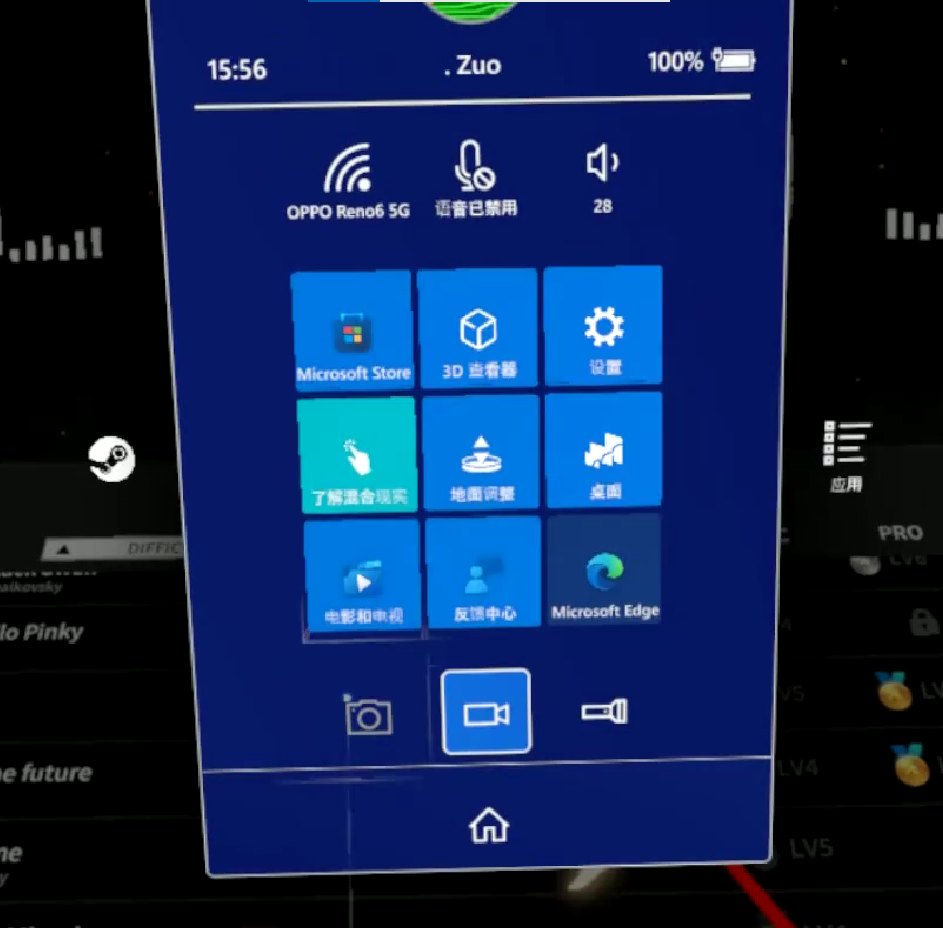

Windows Mixed Reality Headset Review
A review of Windows Mixed Reality using the Asus HC102 VR headset as an example, along with some VR game impressions
Preface
Disclaimer: I know nothing about VR, or VRChat
As the ancients said: “Microsoft is the world’s best tech company at making up concepts.”
Microsoft has a proud tradition of creating a wonderful concept and then killing it off two or three years later. Whether it’s the UWP platform, Windows Phone, the once-legendary Cortana, or many products in the Surface lineup — all have fallen victim to Microsoft’s “axing department.” There’s even a website dedicated to cataloging all the projects Microsoft has axed.
On that ridiculously long list is our protagonist today — Windows Mixed Reality
In 2016, Microsoft announced Windows Mixed Reality, laying out its vision and products developed with various OEM partners. The initial lineup included Lenovo, Samsung, Acer, and others. Samsung even released the flagship HMD Odyssey as the first WMR device. Before this, Microsoft had already released the Hololens — a mixed reality device similar to today’s Vision Pro — but it was only sold to enterprises and teams. Mixed Reality could be seen as their exploration into the consumer market.
At the time, Microsoft proposed the following vision:
- Develop more cutting-edge high-tech devices like Hololens
- Fully cover MR and VR use cases, building a unified application and service platform
None of it came to pass.
After announcing end of support in 2023, Microsoft finally decided to terminate all services in August 2026. Before that, Microsoft had already completely removed WMR support in the Windows 11 23H2 update.
Before purchasing the device, I specifically searched for relevant content about this product and found very little information available in Chinese. So I decided to write this article — both as a review of this product line to provide some reference, and to discuss whether WMR devices are still worth buying as the end of service approaches.
Introduction
The model I purchased is the Asus HC102, priced at 299 yuan (≈40＄). Recently, a large batch of these machines appeared on Xianyu (secondhand marketplace), all still with the protective film on, basically like-new. Compared to other WMR devices on sale, these all come with controllers.
The original retail price of this device was $429 (approximately 2630 RMB). Here’s a spec comparison with the Pico Neo 3:
| Parameter | ASUS HC102 | Pico Neo 3 |
|---|---|---|
| Resolution (per eye) | 1440×1440 | 1832×1920 |
| Refresh Rate | 90Hz | 90Hz |
| Tracking | 6DoF | 6DoF |
| Cameras | 2 BW cameras | 4 BW cameras |
| Horizontal FOV | ~96° | 98° |
| Vertical FOV | ~96° | 90° |
In comparison, the ASUS HC102 falls slightly short only in resolution; the rest of the specs are comparable.
The most fundamental difference between the two devices is that the Pico is an all-in-one. Even without a computer, you can use its built-in resources for things like home theater. WMR, on the other hand, needs to be tethered at all times. That said, for someone like me with bad internet who’s into PC VR, not having wireless doesn’t really matter. And I don’t think anyone would enjoy Pico’s barren ecosystem. I’ve heard the Meta ecosystem is richer, but I haven’t used it so I wouldn’t know.
Based on what I’ve found, aside from some flagship models (Samsung Odyssey, HP Reverb, etc.) having slightly better specs, most WMR headsets are basically identical except for appearance. So while this particular unit isn’t the most representative, it still gives a general idea of what the other same level devices are like.
In the following sections, I’ll frequently compare it to the Pico Neo 3.
Experience
Getting Started
Initial setup for WMR isn’t too tedious. Aside from possibly slow download speeds, it’s basically plug-and-play. Just connect the headset’s USB 3.0 and HDMI cables to your PC, open the Mixed Reality Portal, connect the controllers via Bluetooth, and the software will automatically handle updates and configuration of necessary files.
After setup, you’ll be prompted to define your boundary. Unfortunately, my dorm room is too cramped, so I skipped the “draw your boundary” step and just used stationary boundary. So I didn’t look too closely at this feature. But one thing’s for sure — unlike the Pico’s method of drawing boundaries with controllers, this one has you wearing the headset and face to the computer. Pretty confusing.
The headset has a 3.5mm headphone jack. Unlike Pico’s built-in speaker solution, WMR requires you to plug in your own headphones. I used my spare budget earbuds (the OG NiceHCK), and they worked fine.
Since Microsoft removed underlying system support in Windows 11 23H2, the Mixed Reality Portal can no longer be used on versions after that. However, a developer has created a driver called Oasis that supports Windows 11, allowing you to skip the Portal and connect directly to SteamVR. User feedback says it works fine. I’m a loyal Windows 10 user, so I couldn’t test Oasis’s performance. If you’re on Windows 11, you can search for it on Steam or click this link and follow the documentation.
First Impressions — Windows Home
After setup, the headset displays Microsoft’s “Home” — an interactive system desktop.
Most of the walls in “Home” have system software windows pinned to them, like the browser, weather, email, etc. This is one of WMR’s biggest selling points — using Windows software directly at the system level. However, most of these were UWP apps created in response to the Unified Windows Platform initiative of the time. With UWP’s failure, more and more apps stopped updating, and now very few work properly in VR. Opening them either shows “version too old,” is non-interactive, or just goes straight to a black screen.
“Home” also has many Microsoft-optimized software entry points for WMR, all displayed as statues. Interacting with them launches the corresponding app. Most are stereoscopic animations, but there are also VR games like SuperHot and Minecraft.
The most memorable thing in “Home” for me is probably the 3D Viewer. This built-in Windows 10 app only really shows its worth in WMR. You can place models from the viewer into your home as decorations, or inspect them in first-person detail. You can also import your own models — but you’ll need a specific plugin to convert them to a WMR-compatible format. This tool has no GUI, runs from the command line, isn’t user-friendly for beginners, and has a low success rate. I tried importing a Genshin Impact model — it failed.
Furniture in Home can be resized using the controllers, since they’re essentially 3D models. Each model displays three options at the bottom: Collapse, Follow, and Delete. “Collapse” doesn’t hide the model — it folds the option menu into a “···” icon. “Follow” makes the model move with you. “Delete” removes the model. It’s worth noting that app entries and windows are also rendered as models, so these operations apply to them too.
Feature Experience
Controllers
Both controllers connect via Bluetooth and each require two AA batteries. Battery life is around two to three months.
Since all WMR controllers look pretty much the same — basically just with different OEM logos — controllers from different brands should be interchangeable.
The grip feel is average. Compared to the Neo 3’s rounded, substantial feel, the WMR controllers feel a bit too thin, making you feel like you have to grip them tightly.
Given when the product was released, the joysticks are likely the same carbon-film type used in Xbox controllers, rather than the hall-effect joysticks common today. So improper use might still lead to stick drift. And if it drifts, there’s nowhere to get it fixed.
Unlike mainstream gamepad-style VR controllers today, WMR controllers replace the XYAB buttons with a pressable circular trackpad. In virtual environments, using software with it feels similar to swiping on a laptop trackpad. The upside is that it might be more convenient for PC software. The downside is that some games might see you as an outlier and not have proper button mappings. You can work around this through SteamVR’s button mapping. Otherwise, the joystick, analog triggers, and side buttons are similar to modern VR controllers.
The controllers have a Windows logo button under the thumb. Pressing it brings up the WMR-specific Start menu, which allows for some quick settings.
Clicking “Apps” shows the full app list. You can click an app to create a generic entry model. The app list is divided into VR apps and traditional apps, and traditional apps have serious compatibility issues. I couldn’t open a single one.
The flashlight is a passthrough feature. When activated, it opens a camera view following your controller position, letting you see your surroundings.

You might have noticed this image looks a bit blurry — which brings us to the second feature.
Recording & Screenshots
Recording is a feature worth discussing. Because it’s kind of crap.
By default, the recording feature only captures 720p video. You have to dig through settings to change it to 1080p. Even then, the actual output still doesn’t look like 1080p. Plus, videos are capped at 5 minutes. So if you want high-quality, long-duration footage, your best bet is probably to enable spectator mode on the monitor and record the screen directly with OBS.
The recorded footage is also quite shaky — basically unwatchable.
Screenshots and recordings are saved to your computer’s Pictures folder, but the system doesn’t tell you the file path, which made finding my photos quite a hassle.
Wake-up
The headset is quite sensitive — even a slight movement will automatically open the Mixed Reality Portal. While convenient, it can also trigger accidentally if bumped. The system likely treats the headset as a display output, so opening it causes screen flickering. You can adjust this in settings, but for everyday use, it’s better to just unplug it when not in use.
Gaming Experience
WMR can launch SteamVR by downloading a specific plugin. Here are a few games I tried and my impressions — consider it a mini-review of each.
Assetto Corsa: Competizione
The purpose here was to test the headset’s clarity and visual quality.
Conclusion first: Mediocre
Although the resolution is similar to the Neo 3, I could clearly feel the graininess in actual use. It’s not as细腻 (refined) as the Neo 3. And the square POV leaves noticeable black bars on both sides of the eyes. To use a phone analogy: the Neo 3 feels like a bezel-less phone, while WMR feels like a traditional phone with thick bezels.
VR in racing games mostly just gives you a driver’s perspective — actual controls still require peripherals. I’ve never been good at sim racing. Playing on a monitor was already a disaster, and VR made it even worse. That said, switching to the cockpit view gives you a near-realistic experience of a GT3 race car’s规格 (specifications), which is a novel experience. You can also turn your head to check the rearview mirror — though at this resolution, other cars are just a blob of pixels.
DEEMO -Reborn-
I mentioned earlier the potential button mapping issues with the controllers. The game itself shows at startup that it only has mappings for Oculus devices. When I tried with Pico controllers, I couldn’t even get past the initial perspective calibration — but bizarrely, WMR controllers worked.
This game can serve as a test for controller tracking. Compared to Pico’s multi-modal algorithm-based tracking, WMR uses the veteran’s signature infrared tracking solution, with many LED bulbs on the controller ring to help the headset track them. The downside is that once the controllers leave the headset’s line of sight, tracking stops immediately — unlike Pico, which has some tolerance even when controllers are out of view.
Deemo Reborn is average in VR mode. Originally designed for PS VR (which doesn’t have split controllers), the game puts you in a god perspective and guides characters around like using a cat teaser. I’m not sure if this design is reasonable — you also need to consider scene exploration.
The core rhythm game part is basically Beat Saber with only downward slashes. While the chart design mimics piano playing techniques, without physical keys the feel is just weird. So just stick to practicing 6K on a keyboard.
Half-Life: Alyx
An essential part of the VR experience — if you own VR and haven’t played this, you’re not a successful VR owner.
Since this game was released while WMR was still supported, it has native WMR controller support. The experience is no different from other VR headsets.
I might write a more detailed review of this game. A single paragraph can’t contain all the praise I have for it.
However, there might be black screen freezes during loading — probably the Mixed Reality Portal acting up.
It’s worth noting that WMR’s resource usage isn’t particularly high. My PC has 16GB RAM, an RTX 3060, and a 10th-gen i7. Resource consumption is mostly on the game side. The Portal itself doesn’t use much memory, and games generally run at 60fps. Probably because it came out way too early.
Conclusion
As you can see, limited by the product’s age, Windows Mixed Reality has some minor issues compared to modern VR headsets — resolution, black bars, and some experience-ruining bugs. But at the overwhelming price of 299 yuan, these become minor — even negligible — issues.
For pro gamers in the VR space, this setup is clearly insufficient. I don’t know if there are plugins for motion capture or facial capture. However, for users who want to try VR, don’t have high demands, just want to play SteamVR games, and are on a tight budget, this headset is definitely a solid choice.
That is all.
(Last updated 2026.4.10)